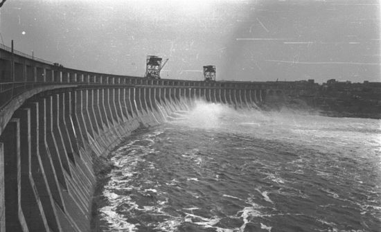
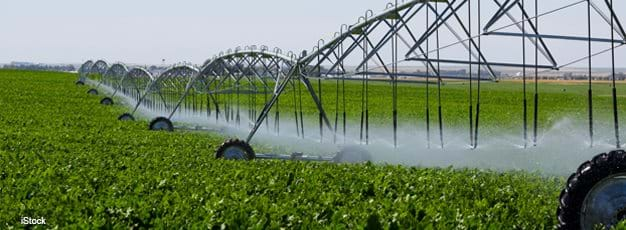

library(tidyverse)
# GIS packages
library(elevatr)
library(rayshader)
library(sf)
library(raster)
library(leaflet)
library(osmdata)
library(basemaps)
# Make GIFs
library(magick)
dms_to_dec <- function(deg=0, min=0, sec=0) {
return(deg + min / 60 + sec / 3600)
}
kh_loc <- data.frame(lat = c(dms_to_dec(46,51,00),dms_to_dec(46,18,00)),
lon= c(dms_to_dec(32,09,00),dms_to_dec(33,25,00)) )Kakhovka Dam Disaster
Animate Flood Inundation Along the Dnipro River
Some History
The war in Ukraine has spawned yet another disaster, the destruction of the dam across the Dnipro river, upstream from Kherson City. This is an ecologial and humanitarian disaster as vast acres of settlements, farmlands and wetlands have been destroyed.
This marks the third time a dam in this region has been destroyed. First in 1941, the Soviets blew up a dam to impede the advancing Germans in southern city of Zaporizhzhia, upstream of the present dam. Tens of thousands of people were killed among Ukrainians and Red Army soldiers (the Germans were not yet in the area). The Germans repaired it. Then, in 1943, the Germans blew it up again to thwart the advancing Soviets.

Ironically, just as the destruction of the Kakhovka dam is an ecological tragedy, so too, was its construction. Many settlements and wetlands were submerged as the Dnipro river backed up to serve Stalin’s drive to collectivize and modernize agriculture.
Modeling the Disaster
Last week, as water poured through the gap where the Kakhovka dam used to be, water levels surged downstream. This was a rolling disaster, with the river delta at the Black Sea seeing the flow last. We can make a rough attempt to visualize the effect of the rising water with an animated inundation map. This is a pretty sophisticated undertaking. Fortunately, there are tools in the form of R packages that have been developed in the last several years that make it easy for anyone to make inundation maps. There are many pieces of the project below where I can not believe how few lines of code are needed.
Let’s see how easy it is.
Get the Lower Dnipro River.
As usual, we load the required packages. Then I just looked at Google Maps to find the coordinates of a region spanning from the Kakhovka dam in the east to the Dnipro delta in the west. Since they were displayed in degrees, minutes and seconds, I wrote a quickie function to convert them to decimal. Note that longitude west of zero and latitude south of zero are expressed as negative, neither of which is true here. Longitudes in the United States, for instance, have a negative sign.
Here is the first “wow, that was easy” moment. We can confirm our coordinates by quickly pulling in a map with multiple layers, one for geographic names, and one for the satellite image. This is done with the leaflet package.
leaflet() |>
fitBounds(kh_loc$lon[1],kh_loc$lat[1],kh_loc$lon[2],kh_loc$lat[2]) |>
addProviderTiles(providers$Esri.WorldImagery) |>
addProviderTiles(providers$CartoDB.PositronOnlyLabels,
options = providerTileOptions(opacity = 1))This is an interactive map. We can pan and zoom to our heart’s content. There are some interesting observations we can make. The dam is at the northeast corner of the image. We can see the swampy lowlands below the dam. They lie mainly to the south of the primary course of the river. Notice the crop circles to the east and south of the reservoir. There are many visible if we pan a bit to the east. This tells us that the crops grown there are irrigated by water pumped to center-pivot sprinkler systems. Presumably the water comes from the reservoir which is now disappearing.

source: iStock
Just to the east of the dam we also see the Crimean canal stretching south, which is a major source of fresh water for the Crimean peninsula. This, too, will cease to function.
Get the Elevations
We are interested in modeling which parts of the river basin got submerged after the destruction of the dam. Obviously we need to know the elevation of the land. Using the elevatr package it only takes one line of code to retrieve a topographic map from the OpenTopography data set. This gets us a raster object that contains a matrix with elevations at each point. It also contains metadata with the coordinate system.
kherson_dnipro <- kh_loc |>
st_as_sf(coords = c("lon","lat"),crs = 4326)
# get the topo matrix
kherson_elev <- get_elev_raster(kherson_dnipro,
src = "gl1",
clip = "bbox",
verbose = FALSE,
serial=TRUE)
Downloading: 3.3 MB kherson_elevclass : RasterLayer
dimensions : 1980, 4560, 9028800 (nrow, ncol, ncell)
resolution : 0.0002777778, 0.0002777778 (x, y)
extent : 32.14986, 33.41653, 46.30014, 46.85014 (xmin, xmax, ymin, ymax)
crs : +proj=longlat +datum=WGS84 +no_defs
source : memory
names : file571c64e2c39
values : -51, 107 (min, max)A quick and dirty plot of the matrix shows the flood situation. Bright green is high ground. The blue isn’t necessarily water, just water and land very nearly at sea level. The color scale is in meters above sea level. South of the river are mostly very low-lying areas. Notably, these areas are Russian controlled today. The north side is in Ukrainian hands.
pal <- colorRampPalette(c("darkblue","limegreen"))
plot(kherson_elev, col = pal(10))
Now let’s create a more realistic view of the ground and show the rising water. To do this we’ll use the rayshader package. When Tyler Morgan-Wall released this package a few years ago, he opened up huge visualization vistas to the R community. We will just be touching the surface of its capabilities here. We’ll use two key features, the ability to shade the surface for a 3D effect and to detect and color bodies of water. Let’s exaggerate the z-axis a bit since this is generally very flat ground and we want to see subtle terrain changes. Like the ggplot2 package, we can start with a base plot and add layers.
kh_elmat <- raster_to_matrix(kherson_elev)
base_map <- kh_elmat |>
sphere_shade(texture = "imhof1",zscale = .8)
base_map |>
add_water(detect_water(kh_elmat),color="desert") |>
plot_map()
We can clearly see the reservoir in the east, the delta in the west, the (exaggerated) canyons carved by the Dnipro tributaries and the narrow river connecting them.
The Human Dimension
What we don’t see are where the people are and this tragedy is very much a human one. We can get a sense of human presence by creating a road overlay using OpenStreetMap data. Again, the code needed to do this is trivially simple. Note the returned object has several layers but we are only interested in the osm_points.
kherson_roads <- osmdata::opq(st_bbox(kherson_dnipro)) %>%
osmdata::add_osm_feature("highway") %>%
osmdata::osmdata_sf()
# Take just the road layer and transform coordinates to our existing projection
kherson_lines <- sf::st_transform(kherson_roads$osm_lines,
crs = raster::crs(kherson_dnipro))
# a rayshader object we pre-generate now for speed later
roads <- generate_line_overlay(
kherson_lines,
heightmap = kh_elmat,
extent = extent(extent(kherson_dnipro)),
linewidth = 2
)
kherson_roadsOnce again we do a quick and dirty plot to visualize the new layer. This is also super easy with the geom_sf geom in ggplot2.
# View streets as a ggplot2 render
ggplot(kherson_lines, aes(color = osm_id)) +
geom_sf() +
theme(legend.position = "none") +
labs(title = "Kherson Roads from Open Street Map")
Add More Realism
Let’s overlay a satellite image to lend more realism to the image. In particular this lets us see the individual farms. Once again, the task is trivially easy using the basemaps package and the freely available ESRI “World Imagery” maps. This is the same image we saw at the beginning of this project but now saved as a “PNG” file. Rayshader will automatically scale the image to match the other layers in the map.
# get image overlay
satview <- basemap_png(
ext = kherson_dnipro,
map_service = "esri",
map_type = "world_imagery",
map_res = NULL,
verbose = TRUE,
browse = FALSE
)Loading basemap 'world_imagery' from map service 'esri'...Visualize the Rising Water
When we put it all together, what do we get?
base_map <- base_map |>
add_overlay(satview)
base_map |>
add_water(detect_water(kh_elmat), color = "desert") |>
add_overlay(roads)|>
plot_map()
We can see the city of Kherson on the north side, the settlements on the south side, mostly out of the swampy areas along the river and, on the upper east side, the town of Nova Kakhovka where the dam and hydroelectric station were.
Using this as a base, let’s create a function that shows the impact of rising water levels. Rayshader will color totally flat areas as water so we mimic rising water by setting the elevations of any point below the rising water level to zero. We can iterate by setting the water level higher and higher to put more of the land “under water.”
We have several layers in this map. The shading, the satellite view, the water level and the streets. Order matters. The shading gets obscured by the satellite image. The rising water covers the satellite image. The streets are drawn last and remain visible so we can see just where human-occupied areas are being flooded. All these are aesthetic choices.
Note:
At this point we should be clear about what this is and isn’t. The method we use here more properly would model rising sea levels. We don’t know exactly how the water affected each area at what time. We don’t know what the peak inundation level was for each area. Further, once the reservoir empties out, the water will recede. Let’s call this a “dramatization.” This does give a dramatic view of the scope of the destruction.
The function below will render a view of our map with a water level rise of zero though eight meters. Again, this doesn’t assume the water rose eight meters, only that it reached eight meters above sea level. That means land at an altitude of seven meters will be one meter underwater for an eight meter water rise. We save each a single image for each meter of water rise and speed things up by changing only the parts of the map which change with the water level.
plot_rising_water <- function(water_level = 0) {
# adjust elevations to simulate water
flood_elmat <- ifelse(kh_elmat < water_level, 0, kh_elmat)
base_map |>
add_water(detect_water(flood_elmat), color = "desert") |>
# add roads on top of water
add_overlay(roads) |>
save_png(
filename = paste0("img/frames/flood_",
formatC(water_level, width = 3, flag = "0"), ".png"),
title_text = paste0(
"Flood Inundation of the Dnipro\nAfter Kakhovka Dam Destruction\nWater Level:",
formatC(water_level, width = 3, flag = " "),
" Meters"
),
title_size = 60,
title_bar_color = "white"
)
}
# generate frames
0:8 |> walk(plot_rising_water)Now that we have saved nine still frames we can animate them into a short GIF file with almost no work at all. There are many ways to save a GIF animation with R. Here we use the magick package because we can create a smooth morph between frames which simulates rising water well.
Note:
We use magick::image_resize() to downscale the individual frames to get a GIF of manageable size. Careful readers might wonder why we didn’t earlier downscale the elevation matrix instead. That would have sped up all the operations above. Unfortunately, that would make the flooded regions look very blocky as we would lose too much terrain data.
# make GIF
target_dir <- "img/frames"
fnames <- paste0("img\\frames\\", dir("img/frames"))
image_read(fnames[1:9]) |>
image_resize("1000x") |>
image_morph() |>
image_animate() |>
image_write(path = "img/flood.gif",format = "gif")
While we don’t know what the maximum water height was or if all of the specific areas shown above got inundated but we do know many did and this clearly shows the vulnerable areas and where people have been potentially displaced.
Now You Try
Here we modeled the disaster in Ukraine but you might use these techniques to visualize the risk of flooding where you are considering buying a house, for example. You might also check out the USGS real-time stream gauge data to see what happens when the creek rises. All you need are four corners on a map to get started.
My Speculation
It’s irrelevant to our project today but as of this writing, we don’t know for sure who blew up the dam. I certainly don’t know but I will make a couple observations. The dam is under Russian control and it looks like the explosion came from inside the structure. The Ukrainians control the Zaporizhzhia dam and there has been no talk of blowing that up. As we saw in WWII, both sides blew up dams to impede enemy advancement. There is one side that is advancing today and it’s the Ukrainians. The Russians would like to slow them down. Finally, while this potentially has one benefit for the Ukrainians by cutting the fresh water canal to Crimea, the Ukrainians could have destroyed just the canal and prevented the Russians from rebuilding it without blowing the dam. We shall see in the fullness of time.